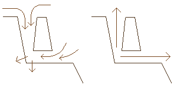

A different pressure effect caused by the weather can make air flow into and out of caves even when they have only one major exit. Britain, as a mid-latitude maritime country, suffers an alternating sequence of high and low pressure air masses (See here and here for an explanation). As these move across an area containing a cave system, the high pressure can force air into large cave systems where it can be stored, particually in those caves in cracked and porous limestone. When the weather front has passed and the low pressure zone is over the cave, the pressure in the cave is higher than the surrounding air, and the stored air can be exhaled from the cave, almost like a huge lung. This "Barometric Wind" has been used to calculate the likely size of caves where it is suspected there might be hidden passages1.
Left)
In high pressure conditions
air is forced into the lower pressure cave system.
Right) When the pressure outside the cave system drops, the
high pressure air inside escapes to equalize the pressure.